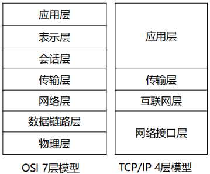
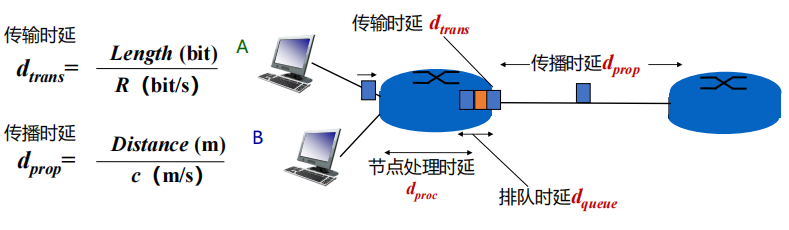

第一章 计算机网络概述
约 2946 个字 12 张图片 预计阅读时间 20 分钟
初识互联网
网络的基本功能
网络提供的最基本服务: 信息传递
- 服务区分方式：
- 功能、延迟、带宽、丢失率
- 端节点数目、服务接口
- 可靠性、实时/非实时等外特性
网络实例
网络分类与构成
网络分类(按地域规模)
- 个域网PAN(Personal Area Network)：能在便携式消费电器与通信设备之间进行短距离通信的网络
- 局域网LAN(Local Area Network)：局部地区形成的区域网络，如企业网络
- 城域网MAN(Metropolitan Area Network)：范围覆盖一个城市的网络
- 广域网WAN(Wide Area Network)：覆盖很大地理区域，乃至覆盖地区和国家
Internet 与 internet
互联网的构成
- 网络边缘
- 端系统：位于互联网边缘与互联网相连的计算机和其他设备
- 端系统由各类主机构成：桌面计算机、移动计算机、服务器、其他智能终端设备
- 网络核心
- 由互联端系统的分组交换设备和通信链路构成的网状网络
- 分组交换：路由器、链路层交换机
- 通信链路(光纤、铜缆、无线电、激光链路)
- 由互联端系统的分组交换设备和通信链路构成的网状网络
网络边缘
- 主机Host
- 客户端
- 服务器
- 主机的功能
- 运行应用程序
- 产生信息并向接入网发送数据
- 从网络接收数据并提供给应用程序
接入网
各种异构网络通过边缘路由器接入
光纤到户FTTH
- 分为两类：有源光纤网络AON和无源光纤网络PON
- 带宽大、线路稳定
- 我国及全球先进地区普遍采用的光纤通信的传输方法
数字用户线DSL
- 使用电话线连接到数字用户线接入复用器(DSLAM)
- 上下行速率不对称
同轴电缆
- 家庭利用传统有线电视信号线(同轴电缆)接入头端上网
- 多个家庭共享有线电视的头端
- 混合光纤同轴电缆HFC：先用同轴电缆接入光纤节点，再用光纤连接到头端
无线接入
无线接入网通过基站将终端系统连接到路由器上
企业和家庭网络
实际的接入网往往采用有线、无线等多种技术的混合，甚至WiFi和4G等多种无线技术的混合接入
物理介质
注意
存储常用字节Byte，K/M/G层级为2^10进制
传输常用比特Bit，K/M/G层级为10^3进制
物理介质类型
- 光纤
- 双绞线和同轴电缆
- 非引导型介质
- 无线电
网络核心
- 网络核心是由各类交换机(路由器)和链路，构成的网状网络。
- 分组交换(包交换)：网络将数据分组从一个路由器转发到下一个路由器，通过从源到目标的路径上的链路，逐跳传输抵达目的地
网络核心的两大功能
- 路由：全局操作(确定数据分组从源到目标所使用的路径)，需要路由协议和路由算法，产生路由表
- 转发：本地操作(路由器或交换机将接收到的数据分组转发出去)，确定转发出去的接口/链路(根据从“入接口”收到分组头中的目的地址，查找本地路由表，确定“出接口”)
路由器转发模型
电路交换(circuit switching)
- 电路交换通常采用面向连接方式
- 先呼叫建立连接，实现端到端的资源预留
- 预留的资源包括：链路带宽资源、交换机的交换能力
- 电路交换连接建立后，物理通路被通信双方独占，资源专用，即使空闲也不与其他连接共享
- 由于建立连接并预留资源，因此传输性能好；但如果传输中发生设备故障，则传输被中断
- 电路交换的多路复用分为频分多路复用以及时分多路复用
无法应对互联网中广泛存在的突发(Burst)流量
存储转发的报文交换
路由器需要接收到完整的整个数据报文后，才能开始向下一跳发送
分组交换
- 将大报文拆分成多个小分组
- 通信双方以分组为单位、使用存储-转发机制，实现数据交互的通信方式
- 以分组作为数据传输单元
- 每个分组的首部都含有地址(目的地址和源地址)等控制信息
- 每个分组在互联网中独立地选择传输路径
- 支持灵活的统计多路复用
资源的处理以及传送速度很快，但是可能会导致包之间到达的顺序可能与发送端不同，接收端需要做额外的处理。
典型交换方式的比较
- 电路交换需要建立连接并预留资源，难以实现灵活复用
- 报文交换(Message Switching)和分组交换较灵活，抗毁性高，在传送突发数据时可提高网络利用率
- 由于分组长度小于报文长度，分组交换比报文交换的时延小，也具有更好的灵活性
协议与分层模型
协议设计目的
协议设计的三要素
- 语法：规定传输数据的格式（如何讲）
- 语义：规定所要完成的功能（讲什么）
- 时序：规定各种操作的顺序（双方讲话的顺序）
通信双方要说的事情多种多样，导致网络协议异常复杂
协议分层结构
- 层次栈(a stack of layers)：为降低网络设计的复杂性，网络使用层次结构的协议栈，每一层都使用其下一层所提供的服务，并为上层提供自己的服务
- 对等实体(peers)：不同机器上构成相应层次的实体成为对等实体
- 接口(interface)：在每一对相邻层次之间的是接口，接口定义了下层向上层提供哪些服务原语
- 网络体系结构 (network architecture)：层和协议的集合为网络体系结构，一个特定的系统所使用的一组协议，即每层的协议，称为协议栈
发送端对发送的内容层层封装(从上往下)，接收端对收到的内容层层解封(从下往上)
服务原语
- 两种不同类型的服务
- 面向连接的服务：传输需要应答
- 无连接的服务：传输不需要应答
六个核心服务原语
服务与协议的关系
- 协议是“水平”的，服务是“垂直”的
- 实体使用协议来实现其定义的服务
- 上层实体通过接口使用下层实体的服务

参考模型
OSI参考模型
OSI 7层模型(从下往上)
- 物理层
- 数据链路层
- 网络层
- 传输层
- 会话层
- 表示层
- 应用层
思考：为何在唯一的MAC地址之外，还需要唯一的IP地址？
MAC地址用于标识设备，是唯一的。但是数量大，并且局域之间无确切规律，无法全部存储于路由表中，不利于数据包在网络中传输时的寻址，IP地址的出现可以解决寻址问题。
TCP/IP参考模型
TCP/IP 4层模型(从下往上)
- 网络接口层
- 互联网层
- 传输层
-
应用层
-
端对端原则：由端系统负责丢失恢复等，简单的网络大大提升了可扩展性
- 实现了建立在简单的、不可靠部件上的可靠系统
OSI模型TCP/IP模型对比

- 7层模型与4层模型
- TCP/IP模型的网络接口层定义主机与传输线路之间的接口，描述了链路为无连接的互联网层必须提供的基本功能
- TCP/IP模型的互联网层、传输层与OSI模型的网络层、传输层大致对应
- TCP/IP模型的应用层包含了OSI模型的表示层与会话层
- 基本设计思想
- OSI：先有模型后设计协议，不局限于特定协议，明确了服务、协议、接口等概念，更具通用性
- TCP/IP模型：仅仅是对已有协议的描述
- 无连接与面向连接
- OSI模型网络层能够支持无连接和面向连接通信
- TCP/IP模型的网络层仅支持无连接通信(IP)
课程内容的分层组织
5层结构：物理层、数据链路层、网络层、传输层、应用层
模型与网络实例
计算机网络度量单位
- 比特率(bit rate)：主机在数字信道上传送数据的速率，也称数据率
- 带宽：网络中某通道传送数据的能力，即单位时间内网络中的某信道所能通过的“最高数据率”
- 包转发率(PPS)：全称是Packet Per Second(包/秒)，表示交换机或路由器等网络设备以包为单位的转发速率。
- 线速转发：交换机端口在满负载的情况下，对帧进行转发时能够达到该端口线路的最高速度
在交换机上：大包和小包，哪个更容易实现线速？
小包更容易实现
实际中存在很多大包是因为包越小，Header占比越高，有效信息占比就越低。
- 时延(Delay)：指数据(一个报文或分组)从网络(或链路)的一端传送到另一端所需的时间
- 传输时延(transmission delay)：数据从结点进入到传输媒体所需要的时间，传输时延又称为发送时延
- 传播时延(propagation delay)：电磁波在信道中需要传播一定距离而花费的时间
- 处理时延(processing delay)：主机或路由器在收到分组时，为处理分组(例如分析首部、提取数据、差错检验或查找路由)所花费的时间
- 排队时延(queueing delay)：分组在路由器输入输出队列中排队等待处理所经历的时延
 - 往返时延RTT(Round-Trip Time)：从发送方发送数据开始，到发送方收到来自接收方的确认，经历的总时间
- 时延带宽积：时延带宽积 = 传播时延 × 带宽，即按比特计数的链路长度
- 吞吐量(throughput)：单位时间内通过某个网络(或信道、接口)的数据量，单位是 b/s
- 有效吞吐量(goodput)：单位时间内，目的地正确接收到的有用信息的数目（以 bit 为单位）
- 利用率：信道利用率指出某信道有百分之几的时间是被利用的，网络利用率则是全网络的信道利用率的加权平均值
- 丢包率：所丢失数据包的数量占所发送数据包的比率
- 时延抖动：变化的时延称为抖动
- 延迟丢包：在多媒体应用中，由于数据包延迟到达，在接收端需要丢弃失去使用价值的包
网络安全与威胁
- 恶意软件：自我复制
- 病毒
- 蠕虫
- 拒绝服务攻击
- 僵尸网络
- 数据包嗅探
- IP欺骗
- 后门程序
- 网络监听
如何防御
- 身份验证：证明你就是你
- 保密：加密技术
- 完整性检查：数字签名检测/防止篡改
- 访问限制：受密码保护的VPN
- 防火墙：接入网络和核心网络中的专用“安全卫士”